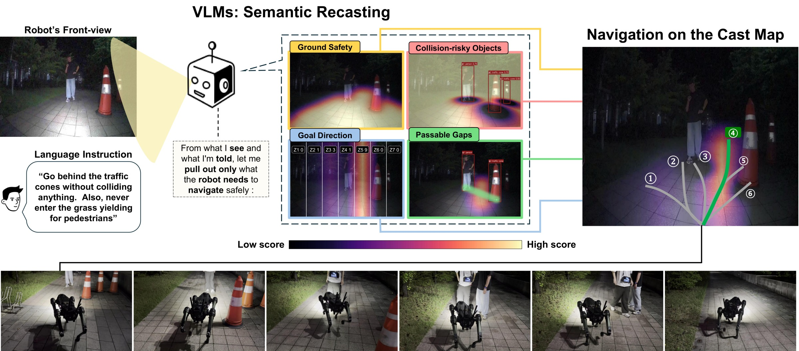
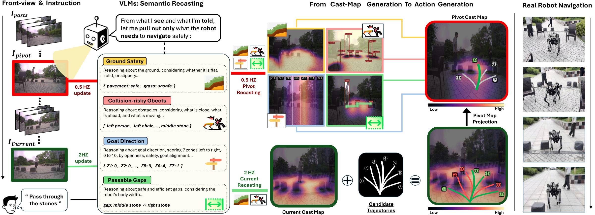

Abstract
Robot navigation that is safe and robust across diverse environments requires a high-level understanding of complex surroundings and the ability to carry it through into stable motion. Recent works take two directions, learning-based models trained at scale and VLM-based approaches, but these break down outside their training distribution, or fail to elicit the VLM's spatial reasoning and align the action with it, so neither turns high-level semantics into accurate action.
To address these limitations, we present RECAST, a robot navigation framework that recasts the knowledge of a VLM into an Actionable Cost map (AC map) that bears directly on the action. Given the frame, the goal, and any constraint the user states, the VLM decomposes the scene into four judgments of traversability, caution, goal direction, and passable gaps, which expert vision models ground into geometry, putting both the reasoning and where it applies on one cost map. The action is then chosen on that same map, which conditions the decoders and scores every trajectory they propose, so the reasoning and the motion cannot misalign. Rebuilt on every current frame between VLM answers, the map keeps up with a changing scene.
RECAST outperforms the strongest baseline by 13.3 points of success in simulation and 31.4 on a real quadruped, with collision rates 9.6 and 14.3 points below it, the lowest of any method. What the VLM judges shapes the map, and the map shapes the path, without retraining.
Method

The pipeline in motion
The same pipeline replayed on a real run. The VLM answers every 1.5 s on the pivot frame (red); the current AC map, the candidates, and their scores are rebuilt every 0.36 s on the live frame (green). Candidates rejected by the score are drawn red, the executed one green.
Real-robot runs
Eight uncut runs on a quadruped, indoors and outdoors, day and night. Each video shows, left to right, the robot's front view with the language instruction, the four judgments as grounded component layers, the AC map with the candidate trajectories and the executed path, and a third-person view of the robot. Ambient audio is included; faces are blurred.
One scene, two constraints
The same sidewalk, the same traffic cones and pedestrian. Only the constraint in the instruction changes, and with it the map and the path.
Passing between the cornerstones
A plaza with cornerstones, chairs, and pedestrians, by day and at night.
Indoors
Cluttered floors and corridors with people, boxes, and chairs.